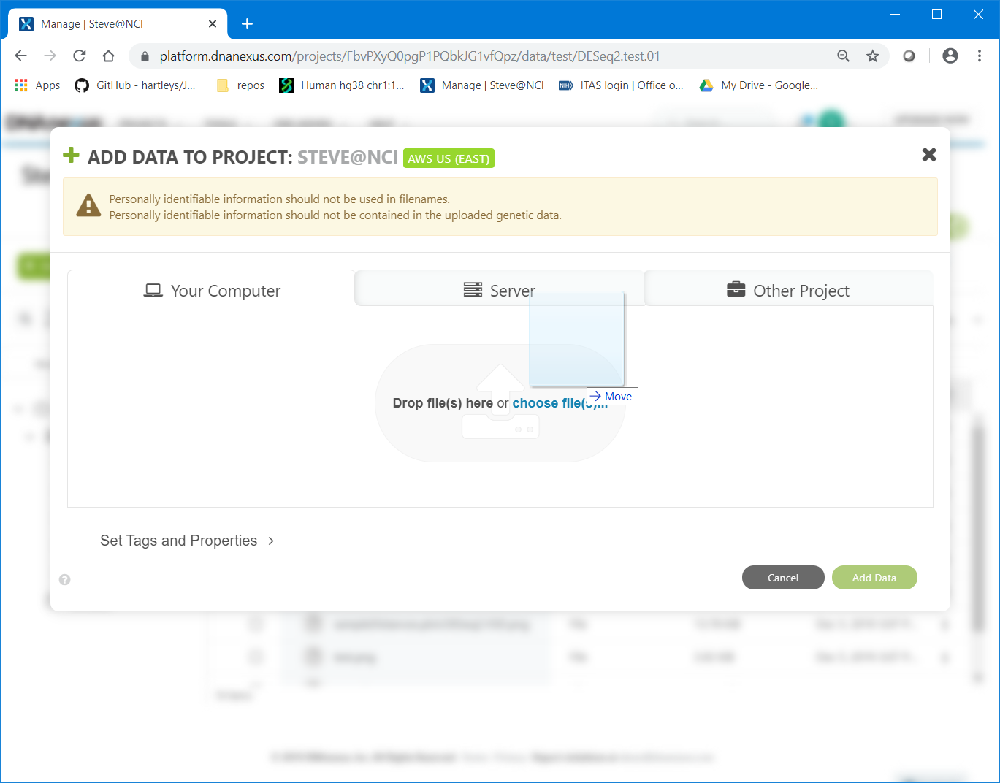

1
Introduction to DNA Nexus and Cloud Computing for Bioinformatics
1.1
Hi!
1.2
Target Audience:
1.3
Audience Experience Level:
1.4
Audience Needs:
2
Why use the cloud?
2.1
Why use the cloud?
2.2
Why use the cloud?
3
Which Cloud to Use?
3.1
Which Cloud to Use?
3.2
Which Cloud to Use?
4
DNA Nexus
5
Getting Started
5.1
Getting Started
5.2
Getting Started
5.3
Getting Started
5.4
Getting Started
5.5
Getting Started
5.6
Getting Started
6
Command Line vs GUI
6.1
The Web Interface
6.2
The Web Interface
6.3
The Web Interface
6.4
The Web Interface
7
The Command Line tool: dx
7.1
Using the Command Line Tool
7.2
Using the Command Line Tool
7.3
Using the Command Line Tool
7.4
Using the Command Line Tool
7.5
Using the Command Line Tool
8
DNA Nexus Apps
8.1
Running Apps
8.2
Running Apps
8.3
Running Apps
8.4
Running Apps
9
DNA Nexus Workstations and Scripts
9.1
DNA Nexus Workstations and Scripts
9.2
R Bioinformatics Toolkit
9.3
R Bioinformatics Toolkit
10
App Monitoring
10.1
App Monitoring
10.2
App Monitoring
10.3
App Monitoring
11
Questions?
11.1
More useful commands:
12
Legal
References
Introduction to DNA Nexus and Cloud Computing for Bioinformatics
6.4
The Web Interface
Files can be uploaded using simple drag and drop.
